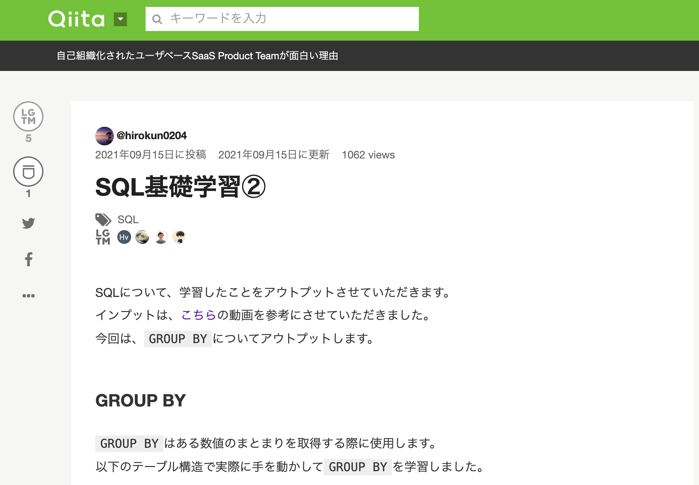

大山大人 Portfolio Site
my profile
パーソナル情報
大山 大人（おおやま ひろと）
1988年01月21日生(33歳)
身長179cm 体重70kg
血液型 O型
経歴
- ・2010年3月 ： 国士舘大学 法学部 法律学科 卒業
-
・2010年4月 ： 山口県警察 拝命
「困っている人を助けたい」という中学生の頃からの夢を追いかけ、警察官になりました。
警察学校卒業後、パトカー勤務や東日本大震災での救助活動を経験し、2014年4月から刑事警察に配属
日々、第一線の捜査員として悪人達と戦う日々を送り、色々な人の人生を見てきて、誰とでもコミュニケーションが取れる能力を身に着けました。
- ・2017年3月~2019年4月 生活安全部 生活環境課 サイバー犯罪対策係 特別捜査係担当
- ・2019年4月~2020.9月 下関警察署 刑事第二課 暴力団対策係 指導兼捜査係担当
- ・2020年9月~2021年3月 刑事部刑事企画課 システム開発管理係 システム開発担当
- ・2021年4月~現在 美祢警察署 地域課機動警ら係
- ・現在転職活動中
IT業界の企業と接触する機会があり、IT業界に興味を持つようになりました。
独学で取り入れたVBA（プログラミングに興味）による業務改善を行い捜査人員を確保→捜査力の向上
前例踏襲を排除した情報収集と幅広い捜査の着眼点を取り入れ検挙実績の向上につなげたことで、就任１年目で過去５年間で最高の犯罪検挙実績を残すことができました。
この時の経験で、マネジメント力、企画力、課題解決力を養うことができ、前例のないことに挑戦する楽しさを覚えることができました。
その結果、本部報告で送信されるフォーマットが統一され、集計効率の向上を実現させました。
ここで、業務改善の面白さとプログラミングに対する興味が増し、本格的に転職をすることを決意します。
ここでも、通常業務の傍ら、警察署独自の業務の効率化を目指して、自ら主体的に計画して勤務表の作成・実績の集計の自動化を図れるツールを作成し、 1時間業務を30秒で完遂できる業務改善を行いました。
2020年に学習したプログラミングスキル
昨年12月から現在までプログラミング学習を続けています
- 12月1日〜6月26日( 207 日) ： プログラミングスクール(Tech Camp)
- <学習内容> HTML、CSS、Ruby、Ruby On Rails、JavaScript、Git
- 6月27日〜8月30日( 64日 ）: LINEbot開発、JavaScriptを使用したWebサイト制作
- 8月31日〜9月11日( 42日 )： 実務案件挑戦(モニタリング整備)(Linux,AWS)
- 9月12日〜現在： AWS認定試験(挑戦中)、SQL、ネットワーク基礎
どの様な業務をしたいか
その為に必要な言語やスキルを常に取り入れていける環境で働きたいです。
どの様なエンジニアになりたいか
私がエンジニア転職を目指す背景には、企業や人が抱えている課題をテクノロジーの力で解決したいという思いが強くあります。
そのため、解決策をさまざまな角度から検討し、提案してきちんと実現できるようなエンジニアになりたいと考えています。
「クライアントが納得してくれている姿は何よりも嬉しく達成感を感じる瞬間だと思いますし、人に喜びや感動を与えることができて、自分も幸せになれる」と考えているからです。
1.挑戦する
今まで当たり前と思われていた事を疑い、常に改善案を考え、とにかくどんどん実行していきたいです。
新しい事に挑戦する事は非常に刺激的ですし、そこから見えてくる新しい景色があると考えています。
そのような仕事が大好きです。
2.価値を生む
価値とはそのサービスや商品を支持してくれる人の数だと考えています。
私が提供するサービスにより多くの人に影響を与え、喜んで貰える事を常に意識して行動しております。
また、ITにはそれが実現可能だと思い、ITへの道を志しました。
企業のデータ分析基盤の構築

ソースコード
GitHub(TellMe)ポイント
- ・要件定義から保守運用までの開発の一連の流れを一貫して経験して作成
- ・使用技術：AWS、Linux開発、BIツール
- ・運用面を考慮して導入しやすいようにDockerを導入、識別子なども全て環境変数化してパラメータストアで管理し、運用効率を意識した設計にしました
- ・監視体制も構築して、システムが正常に作動できる体制を構築、運用定期バックアップを取り入れて、サービスがダウンした際もすぐに復旧できるようにしています
LINE bot
LINE bot
制作物の概要
- ・実際の現場で困っていることを聴取し、実際に使ってみてもらいました
- ・現場で使えるアプリ、ユーザー目線で聞き取りを行いました
- ・実際に使えるとのことで、好評をいただきました
- ・追加機能を頼まれたので、現在改良中
ソースコード
GitHub(book_share)ユーザーの反応
- ・「めっちゃ便利！！、こういうの欲しかった！」
- ・「この前、警察に捕まった時に、これ使って違反金額が本当に正しいか確認したよ！手軽で便利だね」
- ・ 追加機能として、「年齢とか、干支の確認ができたらもっと便利だね」という
フリマアプリ
（スクール学習の集大成）
アプリトップページ
アプリの概要
- 大手フリマサイトの模写したもの、スクール学習の集大成として作成しました。
- 学習した内容のアウトプットとして掲載しています。
- 苦労した点は、ER図の作成で、書くモデルのリレーションとカラムの指定が一番苦労しました。
使用した技術
- ・ログイン機能、CRUD機能、購入機能
- ・単体テスト（Rubocop）
- ・AWSでデプロイ
- ・
- ・
社会人サッカーチームを運営
サッカー仲間との集合写真
アピールしたいポイント
- ・チーム監督としてチームの運営、試合の調整等を行って、マネジメント力を養成
- ・チームをまとめたりするのが好きで、マネジメントするのが好き
→マネジメント力、実行力、コミュニケーション能力が高い
Qiitaへ技術記事投稿
投稿したQiita記事の一部
{kind=link}